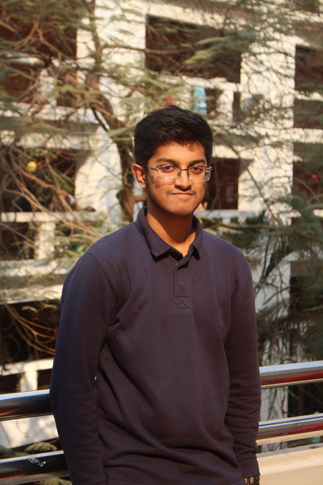

I study how high-speed flows deform, heat, and destabilise structures — through numerical simulation and physics-informed modelling. My current work spans hypersonic aerothermodynamics of re-entry vehicle heat shields and transonic aeroelastic flutter, with a developing interest in ML-assisted CFD for fluid–structure interaction problems.

I am a final-year undergraduate in Mechanical Engineering at AUST, Bangladesh, where I work at the intersection of high-speed flow physics and computational methods. My research focuses on problems where aerodynamics, heat transfer, and structural response are coupled — environments such as hypersonic re-entry, transonic flutter, and thermal protection systems, where the physics is both analytically rich and practically significant.
I co-founded the AUST Applied Modelling and Simulation Lab (AASML), the first student-led computational research hub at AUST, to build a culture of simulation-based inquiry at my institution. Under the advisement of faculty supervisors, the lab mentors junior students in ANSYS Fluent workflows, mesh generation, and technical writing, and organises seminars with researchers from international institutions.
I am also conducting a component-level dynamic simulation of a District Cooling System (DCS) in OpenModelica under Prof. Dr. Dewan Hasan Ahmed, modelling chillers, distribution networks, and end-user thermal loads for energy optimisation. Alongside ANSYS Fluent, I am actively developing competency in OpenFOAM and PyTorch-based physics-informed neural networks (PINNs), building toward ML-assisted CFD workflows.
My long-term goal is to pursue a PhD in fluid dynamics, aerodynamics, or thermal systems, contributing to research that advances the simulation fidelity of extreme-environment flows.
Final-year thesis commencing July 2026; expected focus in computational fluid dynamics or fluid–structure interaction.
I welcome correspondence about research collaborations, CFD methodologies, and graduate study opportunities.